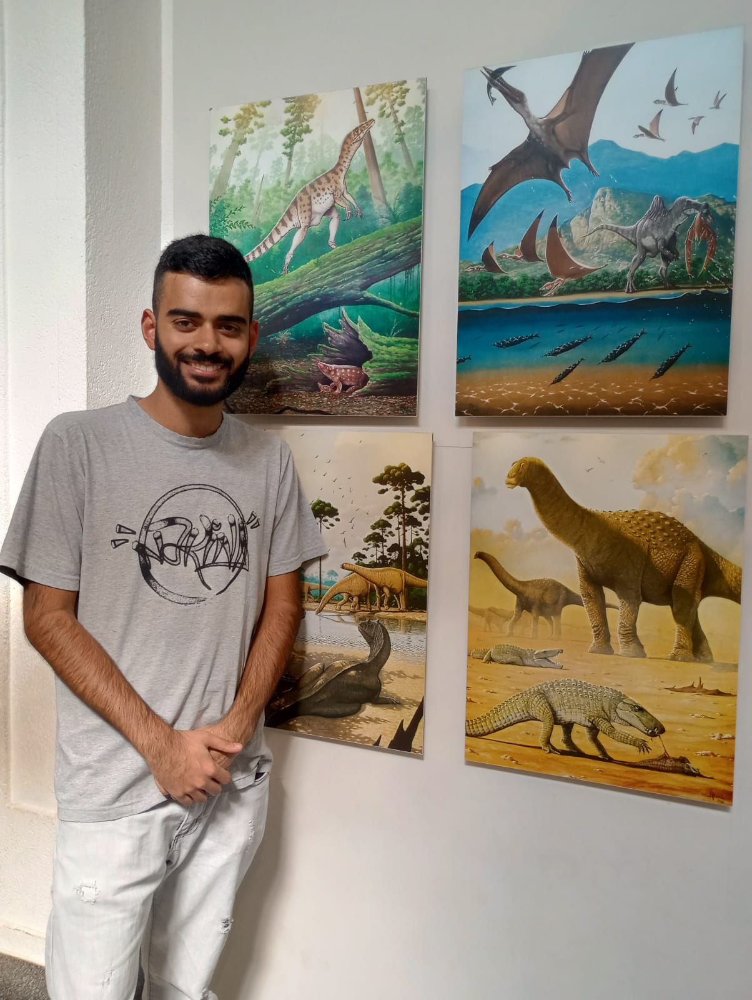

Paleoarte e Fosseis

Obras e Pinturas
A Paleoarte é uma àrea onde utiliza-se técnicas de ilustração e anatomia para representar animais extintos, neste segmento, a criatividade influência na interpretação de como esses animais eram em vidas.
Conheça sobre
Fossilização e Escavação
Após a morte de um animal, o resto de seu corpo permance exposto a diversas adversidades naturais, onde em uma longa escala de tempo, a permanencia de sedimentos por milhares de anos resulta no processo de fossilização.
Conheça sobre